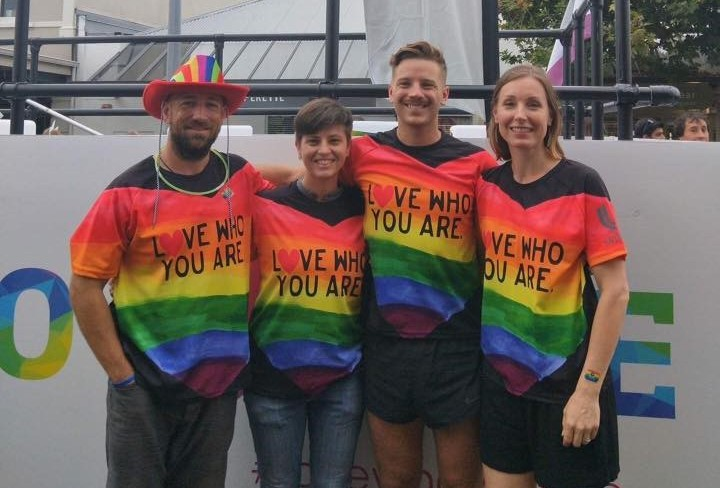

The ALLY Workshop is a professional development training around LGBTIQ issues for staff and students at Unitec. I was a member of the facilitation team that delivered the workshop four times a year. I also participated in the Auckland Pride Parade representing Unitec and the ALLY team.
I have worked with refugee and migrant women’s groups in Auckland delivering sex education relevant to their needs. I ran three sessions with a group of women from middle eastern backgrounds, and was a panelist at the New Zealand Ethnic Women’s Trust ‘Health Talk’ event. My work with these groups has been in helping to bridge the gap between the women’s own experiences of sex education in their countries of origin, and understanding the needs and experiences of their children growing up in New Zealand.
Since 2016 I have been working with Body Positive, an organisation that serves HIV positive New Zealanders. I co-developed and co-facilitated the Sex+ psychoeducational group for gay and bisexual men. The six-week group runs twice a year and is about sexual wellbeing, focussing on confidence, communication skills, and navigating HIV.
Since 2011 I have taught over 100 workshops to a range of adult audiences including students, community groups and professional groups. These workshops address topics related to sexual health, sexual pleasure and communication in relationships. I have presented at over twenty different universities within New Zealand, Australia and the United States. For more information about my freelance sex education work please see my sex educator website.
I reviewed submissions for the US National Sex Ed conference that took place in December 2017. I critiqued and gave feedback on a range of presentations relating to sexual health and sex education.
I spent five months in Indonesia as a Public Health Curriculum Developer at Widya Gama University in Samarinda working with the staff to update course content and improve teaching practices. I spoke on different degree structures for undergraduate public health at the 2015 curriculum symposium. This volunteer role was funded by the Australian government.